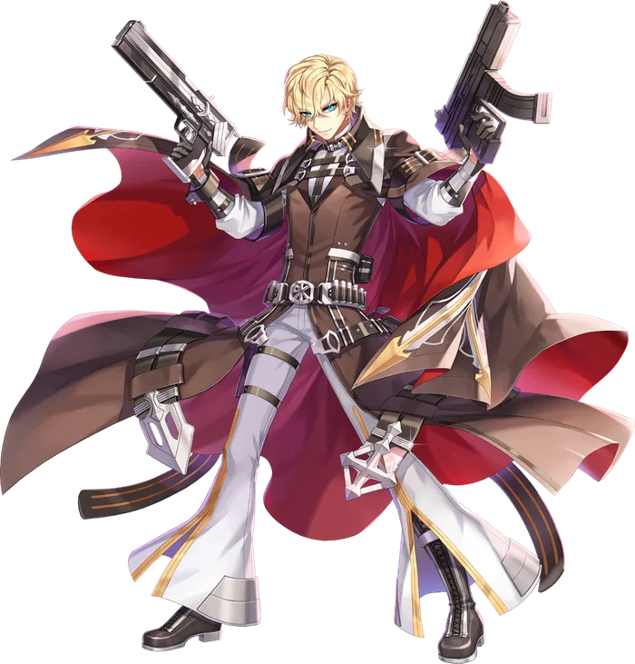

Third tier
Night Watch
Night Watch is the alternative advancement option for Gunslingers. Similar to the Rebel, the Night Watch focuses on expanding the original options of the Gunslinger. While perfectly at home with the triple-wielding style of old, they also gain the ability to specialize in a single weapon type of their choosing.
Revolver, Rifle, and Shotgun Specialization are skills that function effectively the same. While active, the weapon skills of their specified type gain benefits to account for their lack of ability to swap weapons, inflicting varied statuses even with a single gun type.
In addition to these enhancements to the original Gunslinger arsenal, the Night Watch gain a new weapon type unique to them: the Grenade Launcher. Like the Rebel's Gatling Gun, the Grenade Launcher occupies a special equipment slot separate from the user's weapon, allowing them to offer their bonuses consistently through any number of weapon swaps, and no matter which Weapon Specialization the user chooses to rely on.
Grenade Launcher skills have a number of unique characteristics. Chief among them is that they all have exceptionally low Cooldowns, their use being primarily limited by their ammo. The specialized grenades used for firing these destructive weapons does not come from shops, however, but from making use of the Night Watch's other weapon skills. Thus, even those members of the Night Watch who wish to focus entirely on using their Grenade Launchers will need to keep firing off a steady stream of other weapon skills to keep their Launchers fed. But once they get that rhythm down, they will be able to unleash exceptional levels of destruction across the battlefield.
Grenade Launchers also share the unique Mastery system of Gatling Guns in that their Weapon Mastery tracks every skill point invested in any Gatling Gun skill. Those members of the Night Watch who choose to focus their efforts on their new Grenade Launchers will find themselves dealing incredible amounts of damage with almost no down time.

Where it sits
Skill list
Skills
Grouped the way the tree is grouped. Names, types, targets and the numbers behind every level come from the player wiki, so they match what you see in game.
Revolver Skills2 skills
-
Revolver SpecializationRevolverSelfLv 10
Revolver stance: Slow Potency and enhanced Revolver skills.
The user alters their fighting style to specialize in the use of Revolvers. For the skill's duration, the user's Slow Potency is increased and Revolver skills are enhanced. The status ends if the user changes their equipped weapon. This skill shares a cooldown with Rifle Specialization and Shotgun Specialization.
- Quick Draw Bonus: Inflicts Vulnerable and Crimson Marker
- Rapid Shower Bonus: Inflicts Internal Bleeding and Crimson Marker
- Unload Bonus: Gain (Skill Lv/3) Grenades instead of 1
Works withShotgun SpecializationRifle SpecializationCrimson Marker
Level by level
Level Slow Potency Bonus Grenades from Unload 1 +3 0 2 +6 0 3 +9 1 4 +12 1 5 +15 1 6 +18 2 7 +21 2 8 +24 2 9 +27 3 10 +30 3 -
UnloadRevolverEnemyLv 10
Revolver dump that interacts with Crimson Marker; generates a Grenade.
The user unloads their revolvers into the targeted enemy, dealing significant physical damage and attempting to inflict the Slow Status. If the user is under Revolver Specialization, inflicts the Crimson Marker Status. Otherwise, consumes it to instantly refresh this skill's Cooldown. Using this skill immediately generates one Grenade.
Works withRevolver SpecializationCrimson Marker
Level by level
Level Damage Slow Chance SP Cost 1 430% 55% 17 2 460% 60% 19 3 490% 65% 21 4 520% 70% 23 5 550% 75% 25 6 580% 80% 27 7 610% 85% 29 8 640% 90% 31 9 670% 95% 33 10 700% 100% 35
Rifle Skills2 skills
-
Rifle SpecializationRifleSelfLv 10
Rifle stance: Vulnerable Potency and enhanced Rifle skills.
The user alters their fighting style to specialize in the use of Rifles. For the skill's duration, the user's Vulnerable Potency is increased and Rifle skills are enhanced. The status ends if the user changes their equipped weapon. This skill shares a cooldown with Revolver Specialization and Shotgun Specialization.
- Breaking Shot Bonus: Inflicts Slow and Crimson Marker
- Snipe Bonus: Inflicts Internal Bleeding and Crimson Marker
- Hammer Round Bonus: Gain (Skill Lv/3) Grenades instead of 1
Works withRevolver SpecializationShotgun SpecializationCrimson Marker
Level by level
Level Vulnerable Potency Bonus Grenades from Hammer Round 1 2% 0 2 4% 0 3 6% 1 4 8% 1 5 10% 1 6 12% 2 7 14% 2 8 16% 2 9 18% 3 10 20% 3 -
Hammer RoundRifleEnemyLv 10
Explosive splash round; consumes Crimson Marker for bonus damage.
The user fires a devastating blast from their rifle, dealing heavy damage and attempting to inflict the Vulnerable status to the target and all enemies in the area around them. If not under Rifle Specialization, this skill inflicts Crimson Marker. Otherwise, any target under the Crimson Marker status takes significantly increased damage. Using this skill immediately generates one Grenade.
Works withRifle SpecializationCrimson Marker
Level by level
Level Damage Vulnerable Chance SP Cost 1 420% 55% 32 2 440% 60% 34 3 460% 65% 36 4 480% 70% 38 5 500% 75% 40 6 520% 80% 42 7 540% 85% 44 8 560% 90% 46 9 580% 95% 48 10 600% 100% 50
Shotgun Skills2 skills
-
Shotgun SpecializationShotgunSelfLv 10
Shotgun stance: Bleeding Damage and enhanced Shotgun skills.
The user alters their fighting style to specialize in the use of Shotguns. For the skill's duration, the user's Bleeding damage is increased and Shotgun skills are enhanced. The status ends if the user changes their equipped weapon. This skill shares a cooldown with Revolver Specialization and Rifle Specialization.
- Scatter Shot Bonus: Inflicts Vulnerable and Crimson Marker
- Full Blast Bonus: Inflicts Slow and Crimson Marker
- Slug Shot Bonus: Generates (Skill Lv/3) Grenades instead of 1
Works withRevolver SpecializationRifle SpecializationCrimson Marker
Level by level
Level Bleeding Damage Bonus Grenades from Slug Shot 1 3% 0 2 6% 0 3 9% 1 4 12% 1 5 15% 1 6 18% 2 7 21% 2 8 24% 2 9 27% 3 10 30% 3 -
Slug ShotShotgunEnemyLv 10
Heavy slug; consumes Crimson Marker to Stun.
The user fires a heavy slug at the targeted enemy, dealing heavy damage and attempting to inflict the Internal Bleeding status. This skill's damage is treated as Half Bleeding. If the user is not under Shotgun Specialization, inflicts the Crimson Marker status. Otherwise, consumes it to Stun the target. Using this skill immediately generates one Grenade.
Works withShotgun SpecializationCrimson Marker
Level by level
Level Damage Status Chance SP Cost 1 520% 55% 32 2 540% 60% 34 3 560% 65% 36 4 580% 70% 38 5 600% 75% 40 6 620% 80% 42 7 640% 85% 44 8 660% 90% 46 9 680% 95% 48 10 700% 100% 50
Support Skills2 skills
-
Crimson MarkerPassiveLv 10
Extends the duration of the user's Crimson Marker.
Passively increases the duration of all Crimson Markers applied by the user.
Level by level
Level Crimson Marker Duration 1 6s 2 7s 3 8s 4 9s 5 10s 6 11s 7 12s 8 13s 9 14s 10 15s -
Ammunition EconomyGrenade LauncherSelfLv 5
Instantly generates Grenades for Grenade Launcher skills.
The user immediately generates a number of Grenades to be used with Grenade Launcher skills. This skill is not counted when calculating Grenade Launcher mastery.
Level by level
Level Grenades Generated SP Cost 1 1 10 2 1 10 3 2 20 4 2 20 5 3 30
Grenade Launcher Skills3 skills
-
Scorched EarthGrenade LauncherGroundLv 10
Five-hit fire cone treated as Burning Damage.
The user launches a wave of fire in the designated direction, scorching all enemies in its path. Deals physical damage repeatedly to all enemies in its path that is treated as Burning damage. Any enemies struck have a chance of receiving the Internal Bleeding status. The chance is increased for enemies under the Crimson Marker status.
Works withCrimson Marker
Learn firstAmmunition Economy Lv1
Level by level
Level Damage per Hit Internal Bleeding Chance SP Cost 1 60% 5% 42 2 70% 10% 44 3 80% 15% 46 4 90% 20% 48 5 100% 25% 50 6 110% 30% 52 7 120% 35% 54 8 130% 40% 56 9 140% 45% 58 10 150% 50% 60 -
Chain BlastGrenade LauncherGroundLv 10
Triple detonation in widening areas.
The user launches a multi-stage grenade at the target, which detonates three times in a progressively wider radius. Deals three hits of physical damage that is also treated as Burning Damage. Enemies struck have a chance of being inflicted with the Vulnerable status. The chance is increased if the target is under Crimson Marker.
Works withCrimson Marker
Learn firstAmmunition Economy Lv1
Level by level
Level Damage Vulnerable Chance SP Cost 1 155% 5% 32 2 160% 10% 34 3 165% 15% 36 4 170% 20% 38 5 175% 25% 40 6 180% 30% 42 7 185% 35% 44 8 190% 40% 46 9 195% 45% 48 10 200% 50% 50 -
Heavy SalvoGrenade LauncherSelfLv 10
Homing grenades striking only Marked enemies.
The user launches a salvo of grenades in a wide area, dealing heavy damage to all marked enemies on the screen. Deals heavy physical damage that is treated as Burning Damage to all enemies in a wide area around the user that are under the Crimson Marker Status. Enemies struck have a chance of being inflicted with the Slow Status.
Works withCrimson Marker
Learn firstAmmunition Economy Lv1
Level by level
Level Damage Slow Chance SP Cost 1 350% 10% 52 2 400% 20% 54 3 450% 30% 56 4 500% 40% 58 5 550% 50% 60 6 600% 60% 62 7 650% 70% 64 8 700% 80% 66 9 750% 90% 68 10 800% 100% 70
From the players
See it played
Come find out what changed
Make an account, grab the client, and come and see what changed.